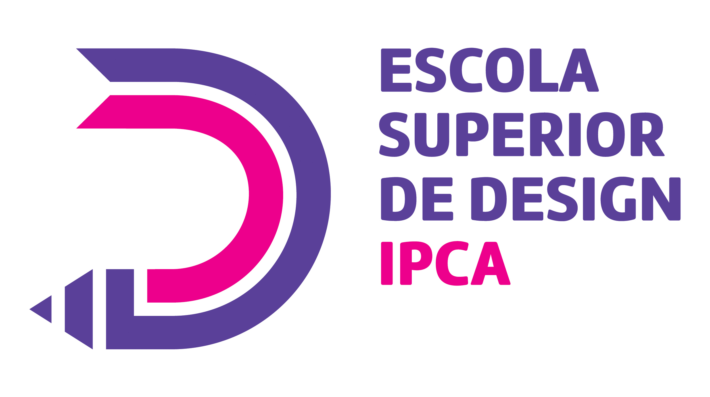

SOBRE ESD
A Escola Superior de Design (ESD) é a uma das cinco unidades orgânicas de ensino e investigação do Instituto Politécnico do Cávado e do Ave. Integra-se na rede de ensino superior público politécnico e encontra-se, atualmente, sediada no Campus do IPCA, em Barcelos. Vocacionada para o ensino superior do design e para a investigação aplicada nesta área, inicia a sua atividade científica e pedagógica no ano letivo de 2015/2016, oferecendo Cursos de 1.º e 2.º ciclo e Cursos Técnico Superiores Profissionais. Com um corpo docente jovem, em constante formação, e dotada de salas de aula, oficinas e laboratórios com tecnologia atual, criam-se condições para a concretização de atividades transversais e específicas, permitindo aos seus estudantes experimentar, testar e produzir de forma acompanhada pelos professores. Uma Escola jovem, geradora de ideias, que incute aos seus estudantes e professores a noção de que o esforço e o saber fazer bem, tornam o seu projeto científico e formativo uma referência no campo do design em Portugal.
ORGANOGRAMA
O Conselho Técnico-cientifico (CTC) é o órgão colegial a quem compete definir as linhas de orientação da investigação e desenvolvimento científico, cabendo-lhe igualmente propor o desenvolvimento de toda a atividade de investigação científica.
É constituído nos termos do n.º 6 do artigo 17.º dos Estatutos da ESD, sendo composto pelos seguintes membros:
Paula Cristina de Almeida Tavares, presidente do órgão;
Cristiana Rodrigues Serejo, secretária do órgão;
Manuel António Carneiro Gaspar de Melo Albino;
Nuno Duarte Martins, representante dos docentes do departamento artes e comunicação;
Pedro Mota Teixeira, representante dos docentes do departamento artes e comunicação;
Susana Amélia Vieira Jorge, representante dos docentes do departamento artes e comunicação.
Consulte o Organograma da ESD
*Clicar sobre a fotogrfia para ver a função
CORPO DOCENTE
O Conselho Técnico-cientifico (CTC) é o órgão colegial a quem compete definir as linhas de orientação da investigação e desenvolvimento científico, cabendo-lhe igualmente propor o desenvolvimento de toda a atividade de investigação científica.
É constituído nos termos do n.º 6 do artigo 17.º dos Estatutos da ESD, sendo composto pelos seguintes membros:
Paula Cristina de Almeida Tavares, presidente do órgão;
Cristiana Rodrigues Serejo, secretária do órgão;
Ana Catarina Vieira Rodrigues da Silva;
Carla Suzana Correia de Assunção Dias;
Jorge Manuel Lopes Brandão Pereira;
Manuel António Carneiro Gaspar de Melo Albino;
Marta Alexandra da Cruz Madureira;
Nuno Duarte Martins;
Pedro Mota Teixeira;
Susana Amélia Vieira Jorge.
*Clicar sobre a fotografia para ver a função
HORÁRIOS SERVIÇOS
Horário funcionamento da Escola
Período letivo:
2.ª a 6.ª feira: 8h30 às 23h00 Sábado: 9h00 às 13h00
Período Não letivo:
2.ª a 6.ª feira: 9h00 às 17h00